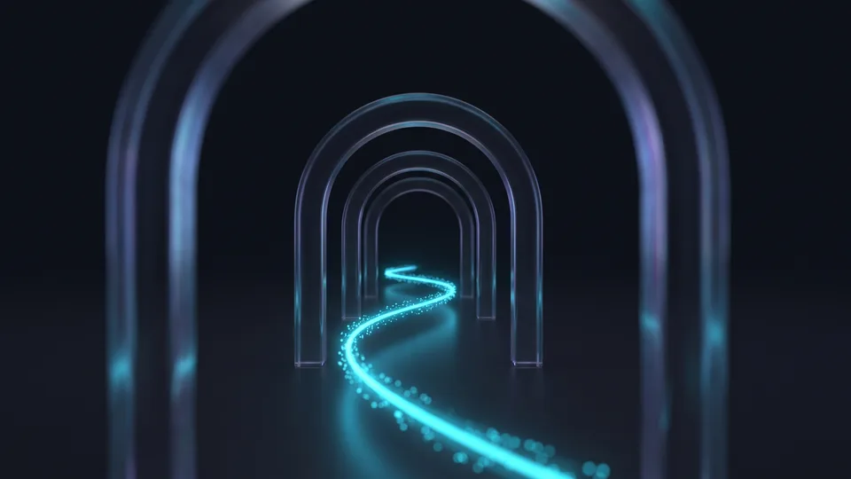

E-Ticaret Kullanıcı Deneyimi Nedir ve Satışı Nasıl Etkiler?
E-ticaret kullanıcı deneyimi, ziyaretçinin siteye girişinden sipariş onayına kadar yaşadığı tüm etkileşimlerin bütünüdür. Akıcı bir deneyim güven oluşturur. Sürtünme ise terk oranını büyütür. Rotadaki her gereksiz adım, satın alma olasılığını ölçülebilir biçimde düşürür. Bu yüzden deneyim yatırımı, reklam bütçesinden önce gelen bir dönüşüm kaldıracıdır.
Pazarın büyüklüğü konuyu stratejik kılıyor. Ticaret Bakanlığı'nın Türkiye'de E-Ticaretin Görünümü 2025 raporuna göre e-ticaret hacmimiz 4,5 trilyon TL'ye ulaştı. Bu tutar gayrisafi yurt içi hasılanın yüzde 6,9'una karşılık geliyor. Rekabet 634 binin üzerinde işletme arasında yaşanıyor. Ürünler benzeştikçe e-ticaret kullanıcı deneyimi, mağazaları birbirinden ayıran asıl unsura dönüşüyor. Bu tabloyu fırsata çevirmenin yolu, yolculuğu rakiplerden daha akıcı kurmaktan geçiyor. Alışverişçinin sabrı sınırlı. Aradığını saniyeler içinde bulamayan ziyaretçi rakibe geçiyor. Kullanıcı deneyimi e-ticarette bir estetik tercihi değil, doğrudan ciro kalemidir.
Kullanıcı Yolculuğu Rotası Ne Anlama Gelir?
Rota, ziyaretçinin hedefe ulaşana dek geçtiği ekran ve kararların sıralı haritasıdır. Bu haritaya kullanıcı yolculuğu denir. Tipik rota beş duraktan oluşur: ana sayfa, kategori, ürün sayfası, sepet ve ödeme. Her durakta iki soru sorarız: müşteri burada ne yapmak istiyor, onu yavaşlatan ne var? İki sorunun cevabı iyileştirme sırasını kendiliğinden belirler. Rotayı kısaltmak, bu yolculuğun en somut kazanım alanıdır.Ana Sayfadan Ürüne Giden Adımlar Nasıl Kısalır?
Ana sayfadan ürüne giden yol en fazla üç tıkta biter. Bunun araçları sade menü, güçlü site içi arama ve net vitrin kurgusudur. Ziyaretçilerin önemli bölümü kategori gezinmek yerine doğrudan arama kutusuna yönelir. Menü derinliğini azaltmak ve popüler kategorileri öne çıkarmak, ürün keşfini belirgin biçimde hızlandırır.
Vitrin karmaşası, rotanın ilk metrelerindeki en yaygın kayıptır. Tek kampanyaya odaklanan ana sayfa, yedi banner'ın yarıştığı sayfadan çok daha iyi yönlendirir. TÜİK'in güncel araştırmaları internet kullanımının her yaş grubunda yaygınlaştığını gösteriyor. Çevrim içi alışverişte deneyim beklentisi de buna paralel yükseliyor. Alışveriş deneyimini ana sayfada güçlendirmenin üç pratik yolu var. Kahraman alanında tek mesaj verin ve menüyü en çok üç seviyede tutun. Arama kutusunu her ekranda görünür yapın. Kurumsal web sitesi projelerinde uyguladığımız bilgi mimarisi ilkeleri, çevrim içi mağazalarda aynı netlikle çalışır.
Site İçi Arama Neden Rotanın Kestirmesidir?
Site içi arama, kategori ağacını atlayıp ziyaretçiyi doğrudan ürüne taşıyan en kısa güzergâhtır. Yazım hatasını tolere eden, önerileri anında listeleyen bir kutu hedefleyin. Bu yapı, üç dört tıklık gezintiyi tek adıma indirir. Boş sonuç dönen sorguları düzenli inceleyin. Bu liste hem eksik ürünleri hem yanlış adlandırmaları ortaya çıkarır. Aramayı kullanan ziyaretçinin dönüşüm oranını ölçmek, yatırımın karşılığını görünür kılar.Ürün Sayfasından Sepete Geçiş Neden Kopar?
Kopuşun ana nedeni eksik bilgidir. Fiyat, stok, kargo süresi ve iade koşulu tek ekranda görünmelidir. Bu bilgileri bulamayan ziyaretçi karar veremez ve sayfayı terk eder. Sepete ekle düğmesinin kaydırma yapmadan görünmesi, geçiş oranını doğrudan etkiler. Belirsizliği azaltan her bilgi parçası, sepete giden adımı biraz daha kısaltır.
Ürün sayfası, e-ticaret kullanıcı deneyiminin karar anıdır; ziyaretçi burada ya sepete yönelir ya sekmeyi kapatır. Kargo ücretini ödeme adımına kadar gizlemek en pahalı hatalardan biridir; stok durumu, teslimat tarihi ve iade süresi düğmenin hemen yakınında durmalı. Beden, renk gibi zorunlu seçimlerde hata mesajını seçim alanının yanında gösterin; sayfanın tepesine fırlatılan uyarı alışverişçiyi yolundan eder.
Sepete Ekle Adımını Netleştiren Üç Detay
Birincisi, düğme metni eylemi söylemeli: "Sepete Ekle" her zaman "Devam"dan iyidir. İkincisi, düğmeye basıldığında görünür bir onay belirmeli. Ürünün eklendiğinden emin olamayan ziyaretçi aynı ürünü iki kez ekler ya da süreci bırakır. Üçüncüsü, ekleme sonrası müşteriyi zorla sepet sayfasına taşımayın. Alışverişe devam seçeneği ortalama sepet tutarını büyütür.Mobilde Başparmak Bölgesi
Başparmak bölgesi, mobil ekranda tek elle rahatça erişilen alt üçte birlik alandır. Sepete ekle düğmesini bu bölgeye sabitlemek, mobil geçişi iyileştiren düşük maliyetli bir düzenlemedir. BTK'nın yayımladığı erişim istatistikleri mobil internetin yaygınlığını düzenli olarak ortaya koyuyor. Rotanızı önce mobilde test edin.Sepetten Ödemeye Rota Nasıl Sadeleşir?
Sepetten ödemeye rotayı üç araç sadeleştirir. Bunlar misafir alışverişi, tek sayfalık ödeme akışı ve yalnızca zorunlu form alanlarıdır. Zorunlu üyelik duvarı, bu aşamadaki en büyük kayıp noktasıdır. Adım ve alan sayısını azaltan her düzenleme, tamamlanan sipariş oranını yukarı çeker. İlerleme çubuğu da müşteriye yolun ne kadarının kaldığını gösterir.
Sepet sayfası bir ara durak değil, sözleşme masasıdır; toplam tutar, kargo bedeli ve teslim tarihi burada net görünmeli. Üyelik dayatması yerine misafir alışverişi sunun; form tarafında her alanı sorgulayın, faks numarası isteyen bir sayfa rotayı uzatmaktan başka işe yaramaz. Ödeme adımında dikkat dağıtan banner ve kampanya kutularını kaldırın; güven öğeleri görünür olsun ama akışı bölmesin. E-ticaret kullanıcı deneyimine yapılan yatırımın en hızlı geri döndüğü yer bu son iki adımdır.
Misafir Alışverişi ve Form Alanları
Misafir alışverişi, üyelik oluşturmadan sipariş verme imkânı sunan hızlandırılmış ödeme seçeneğidir. Form alanlarında altın kural şu: her alan bir sipariş gereksinimine karşılık gelmeli. Adres için otomatik tamamlama, telefon için maskeli giriş kullanın. Hatalı girişleri anında, alanın yanında düzelttirin. Ödeme formundaki her fazladan alan, e-ticaret kullanıcı deneyiminde ölçülebilir bir vazgeçme riskidir.“2024 yılında 600 bin 800 olan e-ticaret yapan işletme sayısı, 2025'te 634 bin 611'e yükseldi.”
— Ticaret Bakanlığı, Türkiye'de E-Ticaretin Görünümü 2025
E-Ticaret Kullanıcı Deneyimi İçin 10 Adımlık Uygulama Listesi
E-ticaret kullanıcı deneyimini geliştirmek için rotayı beş durakta ele alın. Ardından aşağıdaki on adımı sırayla uygulayın. Liste, en yüksek etkiyi en düşük eforla üretecek biçimde dizildi. Her adımı tamamladıkça dönüşüm hunisindeki değişimi ölçün. Ölçülmeyen iyileştirme varsayımdan öteye geçmez. Ölçüm için ücretsiz analiz araçları yeterlidir.
Listeyi bir sprint planı gibi düşünün. Her madde tek başına uygulanabilir.
- Ana sayfadaki kahraman alanını tek mesaja indirin. İkincil kampanyaları alt bölümlere taşıyın.
- Menü derinliğini en çok üç seviyeye düşürün.
- Arama kutusunu her ekranda görünür kılın. Yazım toleransı ve anlık öneri ekleyin.
- Ürün sayfasında fiyat, stok, kargo süresi ve iade koşulunu tek ekranda toplayın.
- Sepete ekle düğmesini mobilde başparmak bölgesine sabitleyin.
- Ekleme sonrasında görünür onay gösterin. Zorunlu sepet yönlendirmesini kaldırın.
- Kargo ücretini sepette, sürpriz bırakmadan paylaşın.
- Misafir alışverişini açın. Üyeliği sipariş sonrasına erteleyin.
- Ödeme formunu zorunlu alanlara indirin. Otomatik tamamlama ekleyin.
- Ay sonunda huni raporunu inceleyin. En çok kaybın yaşandığı durağı yeniden ele alın.
On adım, alışveriş deneyimini soyut bir hedeften yönetilebilir bir iş listesine çevirir. Uygulamada teknik destek gerekirse e-ticaret sitesi tasarımı ve yazılımı ekibimiz rotanızı birlikte kurgular. Nitelikli trafiği büyütme tarafında SEO hizmetimiz devreye girer.
Sonucu Hangi Metriklerle Takip Etmelisiniz?
Dört gösterge yeterli. Bunlar sepete ekleme oranı, sepet terk oranı, ödeme tamamlama oranı, ürüne ulaşma tık sayısıdır. Metrikleri iyileştirme öncesiyle sonrasında karşılaştırın. Dört haftalık pencere mevsimsel gürültüyü azaltır. Bu dörtlü set, mağaza deneyiminin nabzını düzenli olarak tutar.
Uzun Rota ile Kısaltılmış Rotanın Karşılaştırması
| Yolculuk Adımı | Tipik Uzun Rota | Kısaltılmış Rota |
|---|---|---|
| Ana sayfa | Kampanya kalabalığı içinde yön arayışı | Tek vitrin mesajı ve belirgin arama kutusu |
| Kategori | Yedi sekiz seviyeli menüde gezinme | En çok üç tıkta ürüne ulaşan sade menü |
| Ürün sayfası | Eksik bilgi yüzünden sekmeler arası gidip gelme | Fiyat, stok ve kargo bilgisinin tek ekranda toplanması |
| Sepet | Zorunlu üyelik duvarı | Misafir alışverişi seçeneği |
| Ödeme | Beş sayfalık form maratonu | Tek sayfada, otomatik doldurmalı kısa form |
Kapsamınıza uygun yol haritasını birlikte çıkaralım; adımları ve zamanlamayı netleştirelim.
Kapsam çıkaralım Hizmet sayfasını görSepete giden yol kısaldıkça satış artar. Formül bu kadar yalın. Rotanızı beş durakta gözden geçirin ve on adımlık listeyi takvime bağlayın. Her değişikliği ölçerek ilerleyin. Kullanıcı deneyimi tek seferlik bir proje değil, süreklilik isteyen bir bakım disiplinidir. Mağazanızın rotasını birlikte kısaltmak isterseniz e-ticaret çözümlerimiz sayfasından bize ulaşın. Mevcut sitenizin yolculuk haritasını çıkarıp kayıp noktalarını raporluyoruz.